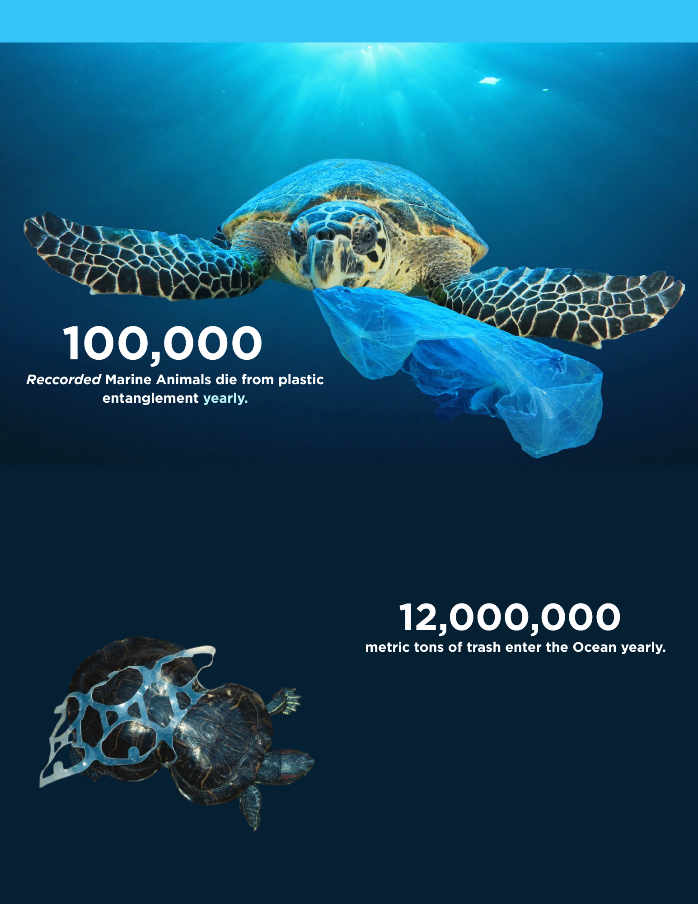

Dataset Map
Global Marine Microplastics Samples
0 marine microplastics samples are loaded on the map.
Map is loading.

Interactive Dataset Viewer
Click the map to inspect the nearest marine microplastics sample, see a local prediction summary based on nearby rows, and ask a chatbot to explain what may be happening in that area.
Dataset Map
0 marine microplastics samples are loaded on the map.
Map is loading.